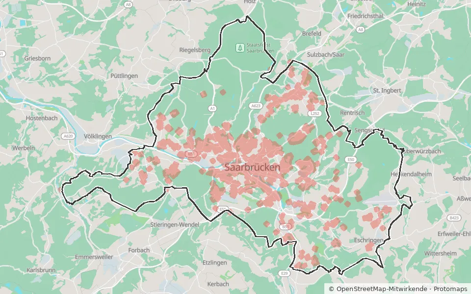
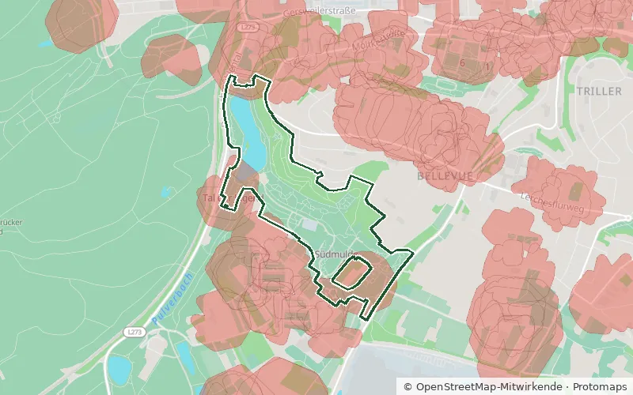
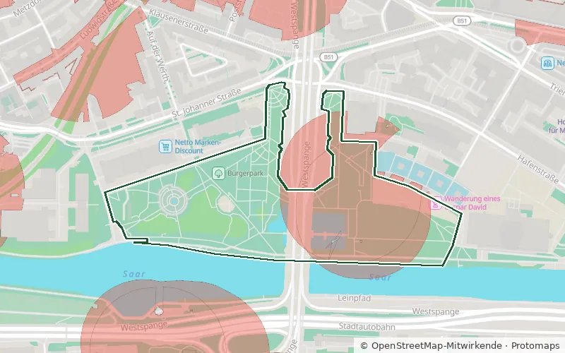
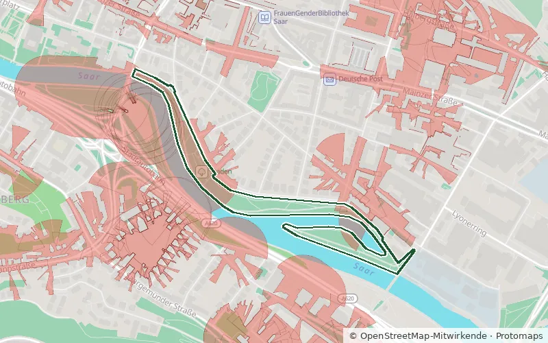
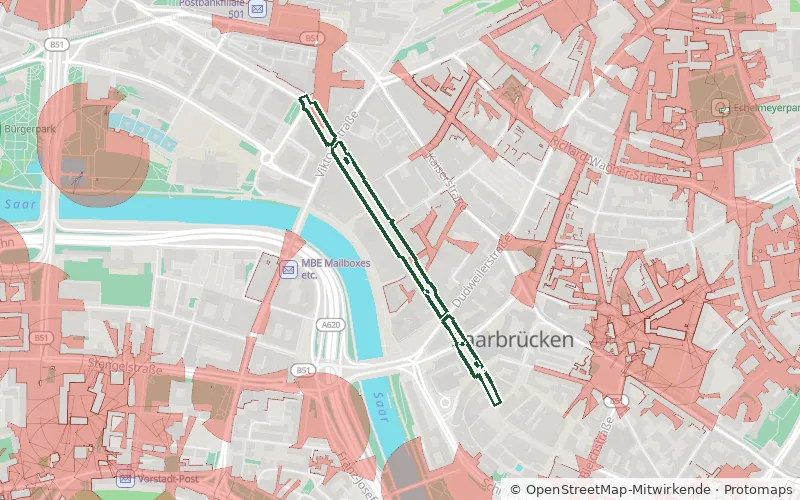
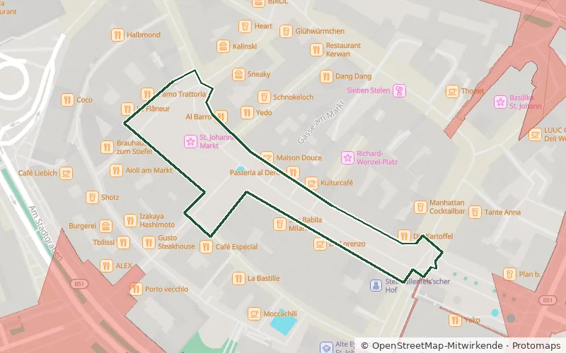
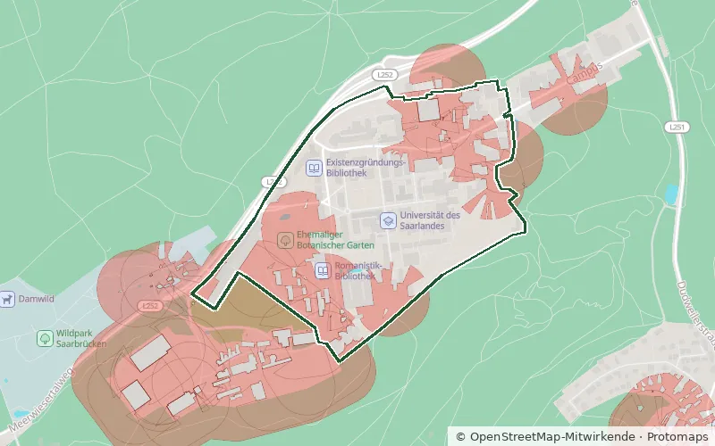

In Saarbrücken ist öffentliches Kiffen auf 16 km² verboten, das sind 9,6 % der Stadtfläche von 167 km². Grund sind 932 Einrichtungen wie Schulen und Spielplätze: In ihrer Sichtweite, bis 100 Meter vom Eingang und ohne Gebäude dazwischen, verbietet § 5 KCanG den Konsum. Dazu kommen die Fußgängerzonen von 7 bis 20 Uhr und überall die Gegenwart von Minderjährigen.
Die Hälfte der Stadt ist Wald (50 % der Stadtfläche), und davon liegen nur 3,5 % in einer Zone; ohne den Wald gerechnet sind es 15,8 %.

Woher die Zonen in Saarbrücken kommen
| Einrichtung | Anzahl | Zonenfläche |
|---|---|---|
| Schulen | 68 | 3,2 km² |
| Kitas und Kindergärten | 101 | 2,7 km² |
| Kindertagespflege | 4 | 0,1 km² |
| Spielplätze | 208 | 4,6 km² |
| Kinder- und Jugendeinrichtungen | 42 | 0,7 km² |
| Sportstätten | 509 | 9,4 km² |
Jede Art für sich gezählt, Überlappungen also mehrfach. Anbauvereinigungen nur, soweit in OpenStreetMap eingetragen.
Die meisten Zonen gehen auf die 509 Sportstätten zurück, danach auf die 208 Spielplätze. Die Schulhöfe der Grundschulen sind nachmittags als Spielplätze offen; dort verbietet die Stadt Alkohol, Drogen und Rauchen (Schulhofsatzung). Die Polizeiverordnung der Stadt verbietet den Konsum von Betäubungsmitteln im Sinne des Betäubungsmittelgesetzes (Polizeiverordnung, § 9); Cannabis zählt seit April 2024 nicht mehr dazu.
Deutsch-Französischer Garten, Bürgerpark und Staden
Im Deutsch-Französischen Garten liegen 18 % der Fläche in einer Zone, um zwei Spielplätze und eine Sportanlage im Park. Im Bürgerpark auf der Hafeninsel sind es 40 %, wegen der Skateanlage, am Staden 41 %, mit einem Spielplatz und 14 Sportanlagen am Rand. Auf einem 100 Meter breiten Streifen Land entlang der Flüsse sind es 19 %.



St. Johann
Fußgängerzone ist nach der Sondernutzungssatzung der Bereich von Reichsstraße, Bahnhofstraße und St. Johanner Markt (Sondernutzungssatzung); seit 2023 gehören auch Obertor-, Faß-, Türken- und Katholisch-Kirch-Straße dazu (Stadt Saarbrücken). Dort gilt von 7 bis 20 Uhr Konsumverbot; blau sind die Fußgängerbereiche aus OpenStreetMap.
Von der Bahnhofstraße liegen außerdem 10 % in einer Sichtweiten-Zone. Der St. Johanner Markt liegt ganz außerhalb (0 %); tagsüber gilt dort aber das Verbot der Fußgängerzone, ebenso auf dem Christkindlmarkt in Bahnhofstraße und am Markt (Stadt Saarbrücken). Der Tifliser Platz liegt zu 84 % in einer Zone, der Ludwigsplatz zu 66 %, der Schloßplatz außerhalb (0 %).


Universität und Ludwigspark
Hochschulen sind nach § 5 KCanG keine Verbotsorte. Vom Campus der Universität des Saarlandes liegen 37 % in einer Zone, um drei Kitas, sechs Sportanlagen und einen Spielplatz auf dem Gelände.

Im Ludwigsparkstadion nennt die Stadionordnung Cannabis nicht; wer erkennbar unter Drogen steht, darf nicht hinein (1. FC Saarbrücken).
Was sonst noch in Saarbrücken gilt
Wer im Saarland Verstöße gegen die Konsumverbote ahndet und mit welchen Beträgen, haben wir nicht belegen können; das Gesetz erlaubt bis zu 30.000 Euro. Eigene Verbotszonen für Cannabis hat Saarbrücken nicht (Stand 27. November 2026).
Häufige Fragen zu Saarbrücken
Wo darf man in Saarbrücken kiffen?
Nach § 5 KCanG außerhalb der roten Flächen, etwa im St. Johanner Stadtwald (8 % in einer Zone) oder abends auf dem St. Johanner Markt. Tagsüber nicht in den Fußgängerzonen, nicht auf Schulhöfen, die als Spielplatz offen sind, nie in Gegenwart von Minderjährigen. Weiß heißt nicht sicher erlaubt: Hecken, Bäume und fehlende Einrichtungen kennt die Karte nicht.
Wie genau ist das?
Täglich aus OpenStreetMap gerechnet, mit Gebäuden als Sichthindernis; die Zahlen hier sind vom 27. November 2026. Eine Orientierungshilfe, keine Rechtsauskunft (wie gerechnet wird).
Fehlt eine Einrichtung? Korrekturen in OpenStreetMap stehen am Tag darauf auf der Karte; bitte nur eintragen, was es vor Ort gibt.